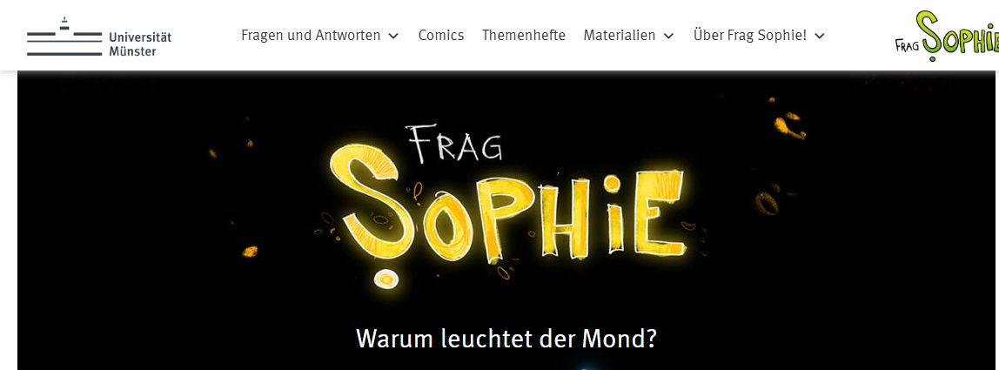

Leas Rechercheweg
Leuchtet der Mond selbst?
2Die Quelle öffnen
Jetzt ist Frag Sophie! geöffnet

Diese Webseite ist Leas Quelle.
Lea liest im ersten Textabsatz unter dem Comic.

Originalaufnahme · 13.10.2026 · Universität Münster / Frag Sophie!
Leas Notiz
Leuchtet der Mond selbst?
Meine Antwort
Noch leer
Diese Stelle hilft mir
Noch leer
Hier steht es
Noch leer